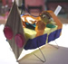

PIE Home
Events
Ideas
Crickets
Places
Links
Philosophy
|
|
PIE Ideas
and Projects
Here's
a sampling of PIE Network projects that take a playful approach to
invention and integrate engineering and scientific concepts with artistic
expression. |
A
Machine that Draws
Try making a machine that can draw. Gather readily-available materials, put them together, then experiment with drawing. Here's a "recipe" for getting started...
Try making a machine that can draw. Gather readily-available materials, put them together, then experiment with drawing. Here's a "recipe" for getting started...
An artist who is part of the PIE Network made a Cricket-controlled machine that uses a light sensor to create paintings at night.

Here's how to make a version of the drawing machine using LEGO RCX.

20 Playful
Inventions
What kind of playful invention or exploration do you imagine? Get
inspired with this list of examples.
At a Spin Art workshop at the Fort Worth Museum of Science and History, kids made drawing machines that spun, rocked, wobbled, and rolled.

Making
a Jitterbug
Find out
how to create
a jitterbug using recycled materials, a motor, and a battery.